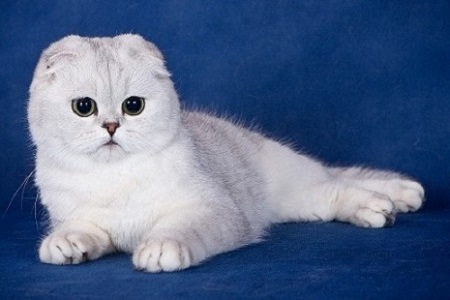
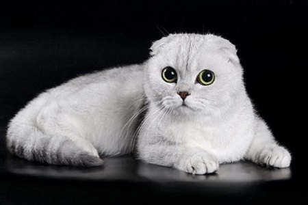
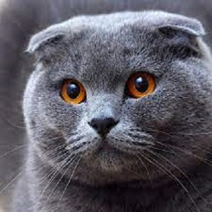
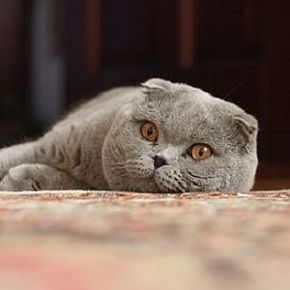
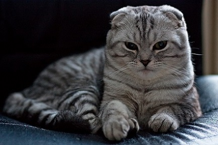
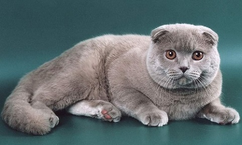

Шотландская вислоухая кошка
Шотландская вислоухая кошка – одна из самых молодых пород. Ее отличают неповторимый внешний вид, грациозность и очень высокий уровень интеллекта.
Отличительная особенность шотландской вислоухой кошки — ее уши. Они небольшого размера и свернуты по направлению к ушному проходу. Кончики ушей имеют круглую форму. Шотландская вислоухая кошка — среднего размера с крепким компактным телом. Голова круглой формы с выраженными бакенбардами расположена на короткой шее. Глаза — большие и широко открытые, с добродушным выражением. Шерсть шотландской вислоухой — короткая и густая. Она бывает различных окрасов и вариантов пятнистости.
Содержание
История происхождения
Прародителями и ближайшими родственниками скоттиш-фолдов считаются британские короткошерстные кошки, поэтому в качестве отдельной породы шотландцы существуют всего около 50 лет. В 1961 году англичанин Уильям Росс приобрел необычного вислоухого котенка у знакомого фермера. Его мать – белая вислоухая кошка Сьюзи – была первой замеченной представительницей этой породы. В 1965 году скоттиш-фолды были зарегистрированы в Совете управляющих пород кошек, а еще через пять лет порода получила свое официальное название.
Вот только долгое время скоттиш-фолды практически не разводились в питомниках, потому что существовал большой риск возникновения генетических заболеваний и мутаций во время селекции. В 1973 году потомки вислоухой Сьюзи попали к заводчице Салли Вулф Петерс, и уже вскоре скоттиш-фолд получили общемировое признание и даже чемпионский статус на одной из кошачьих выставок.
Интересный факт: кошка Матильда из популярного детского мультфильма «Малыш и Карлсон» – это первый скоттиш-фолд, который появился на экранах телевизоров.
Описание породы
Шотландцы, как и ближайшие родственники – британские короткошерстные кошки, обладают мощным приземистым корпусом с развитой мускулатурой. Шея и лапы мощные, короткие, голова большая и круглая, с развитым подбородком и выраженными щеками. Отличительной чертой породы являются небольшие треугольные уши, которые плотно прижаты к черепу, а их кончики направлены вперед и немного вниз из-за специфического залома хряща. Большие и круглые глаза соответствуют окрасу, но чаще всего имеют янтарно-желтый цвет. Хвост длинный, слегка сужающийся к кончику.
Шотландцы, как и британцы, обладают роскошной плюшевой «шубкой» с густым подшерстком. Варианты окрасов самые разнообразные: однотонные: черный, красный, белый, голубой, кремовый; комбинированные: серебристый шиншилловый, дымчатый, мраморный, черепаховый, табби и многие другие.
Характер
Если вы ищете себе ласкового и доброго питомца, то вислоухий шотландец – идеальный вариант. Они весьма спокойны и уравновешенны, редко устраивают погромы в доме, раскачиваясь на шторах и устраивая гонки по комнатам. Шотландцы хорошо адаптируются к новой обстановке, не пугаются громких звуков и незнакомых людей, при этом очень любознательны и обязательно исследуют каждый закоулок в доме. Кошки этой породы, в отличие от высокомерных британцев, ласковы и привязаны к своему хозяину. Они могут выражать свою признательность, запрыгивая на колени и мурлыкая песенку, позволяют себя гладить и часто даже забираются спать в кровать к своему владельцу. Прекрасно уживаются с детьми и другими домашними животными, включая собак и кошек других пород, не пытаясь доминировать и устраивать сцены ревности.
Шотландцы обожают играть и резвиться, вовлекая в свои игры всех вокруг. Прятки, догонялки, охота за фантиком или резиновым мячиком, хождение на задних лапах — вот любимые развлечения этих добродушных шалунов. Многие владельцы отмечают любовь котов к просмотру телевизора, уютно развалившись на диване.
Эти вислоухие красавцы хорошо переносят одиночество, и вряд ли будут дуться на вас, если вы поздно придете с работы или задержитесь в гостях. Но и молчать, если им скучно или проголодались, они не будут и громким, немного скрипучим голосом оповестят вас о своих потребностях.
Уход и содержание
Хотя шотландцы по природе довольно неприхотливые кошки, прежде чем принести в дом котенка, следует выполнить несколько простых вещей. Во-первых, спрячьте все провода, кабели, зарядки, наушники и хрупкие предметы подальше. Во-вторых, купите удобный лоток и приучайте котенка к нему с первого же дня. Подготовьте для кошки спальное место или приобретите специальный кошачий уголок – со спальным местом и когтеточкой. Чтобы питомец не скучал, купите ему специальные игрушки.
Уделяйте особое внимание уходу за шерстью питомца: раз в неделю кошку нужно вычесывать специальной щеткой (в период линьки ежедневно). От пуходерки лучше отказаться, чтобы не повредить подшерсток. Купать шотландца достаточно раз в полгода: главное, тщательно высушивайте его после водных процедур и держите подальше от сквозняка. Раз в 2 — 3 недели подстригайте кончики когтей и очищайте уши ватным тампоном от скопившейся серы и грязи. А вот глаза нужно проверять каждый день: если у животного долгое время сохраняется слезотечение или гнойные выделения, обязательно обратитесь к ветеринару.
Шотландцы отличаются отменным аппетитом, но при этом склонны к ожирению, поэтому выбирайте сбалансированный рацион питания. Можете выбрать профессиональный корм премиум-класса (чередуя сухой корм с консервами) или остановиться на «натуралке». Как и британцев, шотландских вислоухих кошек следует кормить термически обработанным нежирным мясом (говядиной, телятиной, курицей) и субпродуктами, перепелиными яйцами (или желтком куриного яйца), кисломолочными продуктами (ряженка, кефир) и отварными овощами. Чтобы восполнить потребность кошки в витаминах и минералах, приобретите специальные пищевые добавки, предварительно посоветовавшись с ветеринаром.
Обучение и дрессировка
Шотландцы в силу своего незаурядного ума и добродушного характера хорошо поддаются обучению и дрессировке, поэтому с ними часто выступают на выставках. Например, они по команде могут вставать и даже ходить на задних лапах и выполнять другие несложные трюки. Их без проблем можно приучить к лотку и даже водным процедурам, главное, начинать обучение с младенчества.
Здоровье и болезни
Поскольку порода была создана во многом благодаря генной мутации, шотландцы могут страдать некоторыми генетическими заболеваниями, например, остеохондроплазией. Это наследственная болезнь суставов, из-за которой у котенка нарушается рост костей и хрящей, может быть смертельно опасной для питомца, поэтому при покупке обязательно поинтересуйтесь его наследственностью. Другие опасные врожденные заболевания: хондродистрофия, артрит и артроз – также чаще всего возникают из-за неправильного скрещивания вислоухих и прямоухих кошек (скоттиш-страйтов).
Из-за особого разреза глаз скоттиш-фолды могут страдать из-за заворота века (требуется хирургическое вмешательство), а с возрастом могут развиться глаукома и катаракта. Кошки могут заболеть аллергией или экземой, а также заразиться чесоткой. Часто у вислоухих шотландцев встречается глухота (врожденная полная или частичная). Также с возрастом могут возникнуть проблемы с сердечно-сосудистой и пищеварительной системами, поэтому регулярный осмотр у ветеринара просто необходим.
Галерея |
|---|
|       |